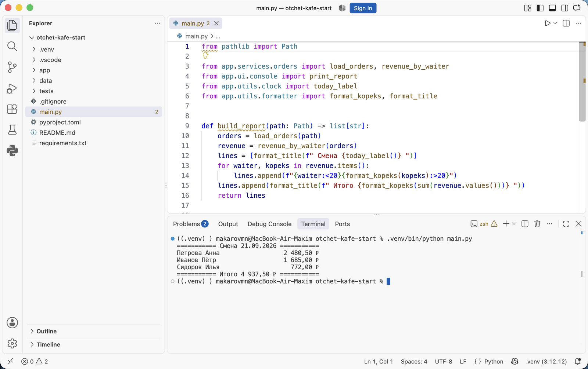

Докстринги и документация кода · МДК.01.01 · разработка программных модулей
Глава 4.1
Документация кода:
какая она бывает
В этой главе разобрано, что называют документацией кода, какие пять её видов встречаются в проекте на Python, где каждый из них хранится и кто его читает. Отдельно разобрана разница между комментарием и докстрингом: они выглядят похоже, а попадают в разные места программы.
- Категория
- Понятия
- Уровень
- Начальный
- Опирается на
- Модули и пакеты, тема 02
- Зачем это знать
- Различать виды документации и выбирать нужный
§1Что называют документацией кода
Документация кода — текст, который объясняет назначение программы и её частей и хранится вместе с исходным кодом. Её читатель — разработчик: тот, кто этот код вызывает, читает и изменяет. Инструкция для пользователя программы пишется отдельно и в исходники не попадает.
В теме 02 проект был разложен по модулям и пакетам. Получилась папка app/, в ней services/calculator.py, utils/formatter.py и несколько десятков функций. Чтобы вызвать функцию из соседнего модуля, нужно знать три вещи:
- что функция делает;
- что она принимает и какие значения допустимы;
- что она возвращает и что будет при неверных данных.
Первый способ получить эти сведения — открыть файл с функцией и прочитать её тело. На десяти функциях это занимает минуту, на двухстах — час. Второй способ: те же три ответа записаны рядом с функцией заранее, и редактор показывает их в момент вызова. Этот второй способ и называют документацией кода.
Проект, на котором идёт разбор
Все примеры в теме взяты из одного проекта — «Отчёт кафе». Он читает файл смены с заказами, считает выручку по каждому официанту и печатает отчёт в консоль. Код рабочий, двенадцать тестов проходят, описаний нет ни одного: их предстоит написать по ходу темы.
Скачайте первый архив сейчас и распакуйте: дальше главы называют файлы этого проекта по именам. Второй архив — тот же код с описаниями, его открывают в конце для сверки.
- Распакуйте архив и откройте папку
otchet-kafe-startв VS Code. - Создайте окружение и установите зависимости:
python3 -m venv .venv, затем.venv/bin/pip install -r requirements.txt. - Запустите проект:
.venv/bin/python main.py. В терминале появится отчёт по смене.

app, папка data с файлом смены, папка tests. В редакторе main.py: он вызывает load_orders, revenue_by_waiter и функции форматирования. Внизу в терминале — напечатанный отчёт: три официанта и итог 4 937,50 ₽.В проекте десять модулей, разложенных по пакетам: domain — заказ и смена, services — чтение файла и расчёты, utils — имена, суммы и дата, ui — печать в консоль.
§2Пять видов и их читатели
В проекте на Python встречаются пять видов текста о коде. Они не взаимозаменяемы: у каждого своё место в файлах и свой читатель.
| Вид | Где лежит | Кто читает | Что отвечает |
|---|---|---|---|
| Комментарий | Внутри функции, после знака # |
Тот, кто правит эту функцию | Почему строка написана именно так |
| Докстринг | Первой строкой модуля, класса или функции, в тройных кавычках | Тот, кто вызывает функцию извне | Что функция делает, что принимает, что возвращает |
| Аннотация типа | В подписи функции: def f(x: int) -> str |
Редактор, проверщик типов, человек | Какого типа значения допустимы |
| README | Файл README.md в корне проекта |
Тот, кто впервые открыл репозиторий | Что это за проект, как его запустить |
| Сгенерированный сайт | Папка docs/, собирается программой |
Тот, кто пользуется библиотекой и в код не заходит | Полный перечень функций с описаниями |
Первые три вида лежат внутри файла с кодом и меняются вместе с ним. README лежит отдельным файлом в корне проекта и обновляется отдельным действием. Сайт собирается программой из докстрингов: свой текст в него не дописывают, правят исходники и собирают заново.
def, комментарий внутри тела. Аннотации типов стоят в самой подписи. README лежит отдельным файлом в корне проекта. Сайт документации не пишут руками: его собирает программа из докстрингов, и стрелка идёт только в одну сторону.Зачем это нужно в работе
- Вызов функции без чтения её тела. Докстринг виден в подсказке редактора в момент вызова, поэтому проверять поведение по исходнику приходится реже.
- Передача кода другому человеку. На защите вклада и при передаче модуля смежной команде задокументированный публичный интерфейс заменяет разбор кода построчно.
- Проверка на стороне инструментов. Отсутствие докстринга у публичной функции проверяется программой и попадает в замечания к запросу на слияние так же, как ошибка форматирования.
§3Комментарий и докстринг: где они оказываются
Комментарий и докстринг записываются в одном файле и попадают в разные места программы. Комментарий интерпретатор отбрасывает при чтении файла: в работающей программе его нет. Докстринг сохраняется в самом объекте — в модуле, классе или функции — и доступен во время работы программы.
def calculate_average(grades: list[int]) -> float: """Считает среднюю оценку по списку. Args: grades: Оценки студента, список не должен быть пустым. Returns: Среднее значение, округлённое до двух знаков. Raises: ValueError: Если список оценок пуст. """ if not grades: raise ValueError("Список оценок пуст") # round вызывается один раз в конце: округление каждого # слагаемого по отдельности смещает результат return round(sum(grades) / len(grades), 2)
Строка в тройных кавычках — докстринг. Она обращена к тому, кто будет вызывать calculate_average из другого модуля: перечислено, что принимается, что возвращается и когда вместо результата будет ошибка. Две строки после знака # — комментарии. Они объясняют выбор внутри тела и нужны тому, кто станет эту функцию править.
Разница видна из программы. Докстринг лежит в атрибуте __doc__, комментарий не лежит нигде:
>>> from app.services.calculator import calculate_average >>> print(calculate_average.__doc__.splitlines()[0]) Считает среднюю оценку по списку.
Ассоциация: упаковка лекарства
На коробке напечатано название, дозировка и противопоказания — это читают перед приёмом. Внутри производства есть технологические записки о том, почему выбран такой состав; в коробку они не вкладываются.
Докстринг — надпись на коробке: что это, сколько принимать, когда нельзя. Комментарий — записка изнутри производства: почему выбран такой состав.
Где не совпадаетНадпись на коробке печатает завод один раз, и она не меняется. Докстринг правит тот же человек, который меняет функцию, и описание при этом можно забыть обновить. Поэтому докстринг исправляют в том же изменении, что и поведение.
§4Что берёт на себя имя и аннотация типа
Часть работы документации выполняют имя функции и аннотации типов. Имя calculate_average сообщает действие, аннотация list[int] -> float сообщает типы. Повторять это словами в докстринге не требуется.
"""Функция calculate_average принимает список целых чисел grades и возвращает число с плавающей точкой."""
"""Считает среднюю оценку по списку. Пустой список приводит к ValueError, результат округляется до двух знаков."""
В докстринг идёт то, что из подписи не следует: смысл значения, ограничения на входные данные, поведение в исключительных случаях, единицы измерения. Например, что суммы в проекте хранятся в копейках, из аннотации int не видно, и это место для докстринга.
Тест показывает поведение на конкретных данных: calculate_average([5, 4, 5, 3, 5]) == 4.40. Это точная запись ожидания, которую проверяет программа. Докстринг и тест закрывают разные потребности: по докстрингу понимают назначение, по тесту — точный результат на примере. В главе 4.3 разобран формат, который позволяет записать пример прямо в докстринг и проверять его запуском.
§5Документация, собранная в сайт
Автоматическая документация — набор HTML-страниц, который программа собирает из исходного кода проекта: проходит по модулям, находит функции и классы, забирает их докстринги и раскладывает по страницам с оглавлением и поиском. Так устроена, например, документация самого Python на сайте docs.python.org.
В Python для этого используется Sphinx — программа сборки документации, которой достаточно указать корень проекта и перечислить модули. Порядок работы такой:
Путь от докстринга до страницы
Шаги 2–4 разбираются в следующей теме. Здесь важен шаг 1: в сайт попадает ровно то, что написано в докстрингах, и никакой сборщик недостающее описание не придумает.
§6Правило документирования в этом курсе
Документировать всё подряд дорого, и часть текста устареет раньше, чем её прочитают. В курсе принято правило по границам модуля: описание обязательно там, где код вызывают снаружи.
Докстринг обязателен
app/Первая строка файла: за что этот модуль отвечает.main.py.Служебные функции с именем, начинающимся с подчёркивания, документируются одной строкой или остаются без докстринга: они вызываются только внутри своего модуля. Проверки, что это правило соблюдено, настраиваются программой — это разобрано в главе 4.5.
§7Частые вопросы
__doc__ и help(), показывается в подсказке редактора и попадает в собранную документацию.§8Проверьте себя
Чем докстринг отличается от комментария по месту хранения?
Комментарий существует только в тексте файла: интерпретатор отбрасывает его при чтении, и в работающей программе комментария нет. Докстринг становится значением атрибута __doc__ у модуля, класса или функции, поэтому он доступен во время работы программы, через help() и в подсказке редактора.
В функции есть аннотации типов. Что после этого остаётся написать в докстринге?
То, чего в подписи нет: смысл значения и единицы измерения (например, что сумма хранится в копейках), ограничения на входные данные, поведение при пустом или недопустимом значении, перечень возбуждаемых исключений. Перечисление типов словами в докстринге дублирует подпись.
Какие виды документации обновляются вместе с кодом, а какие отдельно?
Комментарий, докстринг и аннотация лежат в том же файле и правятся вместе с функцией. README лежит отдельно и обновляется отдельным действием. Сайт документации не правится вручную: меняют докстринги в исходниках и собирают сайт заново.
Почему сборщик документации не может обойтись без докстрингов?
Сборщик берёт текст описаний из кода: находит функцию, её подпись и аннотации, а описание назначения брать ему неоткуда. Функция без докстринга попадёт на страницу одной подписью, поэтому качество собранного сайта равно качеству докстрингов.
У функции имя начинается с подчёркивания. Обязателен ли для неё докстринг по правилу курса?
Нет. Подчёркивание в начале имени означает, что функция служебная и вызывается внутри своего модуля. Для неё достаточно одной строки или комментария. Обязательны докстринги у модулей, классов и функций, которые вызывают снаружи.
§9Шпаргалка по главе
# после кода в строке
читает тот, кто правит
в программе не хранится
"""первая строка объекта"""
читает тот, кто вызывает
хранится в __doc__
def f(x: int) -> str
только типы
о проекте целиком
назначение, запуск, состав
собирается из докстрингов
Sphinx, следующая тема
модули пакета app/
публичные функции и классы
возбуждаемые исключения
Итог главы
Документация кода — текст о назначении программы, который хранится вместе с исходниками. В проекте на Python её пять видов: комментарий внутри тела, докстринг у модуля, класса и функции, аннотация типа в подписи, README о проекте целиком и собранный программой сайт. Комментарий адресован тому, кто правит код, и в работающей программе его нет. Докстринг адресован тому, кто вызывает функцию, хранится в атрибуте __doc__ и попадает в подсказку редактора и в собранную документацию. Имя и аннотации сообщают действие и типы, поэтому в докстринг идут ограничения, единицы измерения и поведение при ошибках. В курсе описания обязательны для модулей пакета, публичных функций, классов и мест, где возбуждаются исключения. В следующей главе разобрано, как докстринг устроен: где именно он должен стоять, как его прочитать из программы и какие правила задаёт стандарт PEP 257.
- Хранение докстринга в атрибуте
__doc__и правила его размещения — учебник Python, раздел о строках документации. - Стандарт оформления — PEP 257, Docstring Conventions.
- Сборка документации из исходного кода — сайт Sphinx.